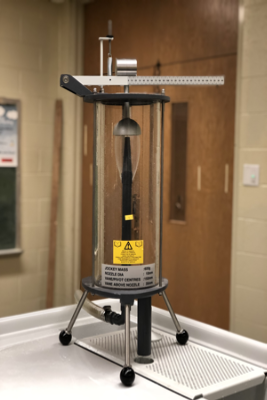
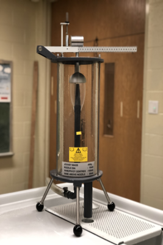

6. Momentum Transfer¶
Water Jets¶
Moving fluid, in natural or artificial systems, may exert forces on objects in contact with it. To analyze fluid motion, a finite region of the fluid (control volume) is usually selected, and the gross effects of the flow, such as its force or torque on an object, is determined by calculating the net mass rate that flows into and out of the control volume. These forces can be determined, as in solid mechanics, by the use of Newton’s second law, or by the momentum equation. The force exerted by a jet of fluid on a flat or curve surface can be resolved by applying the momentum equation. The study of these forces is essential to the study of fluid mechanics and hydraulic machinery.
Engineers and designers use the momentum equation to accurately calculate the force that moving fluid may exert on a solid body. For example, in hydropower plants, turbines are utilized to generate electricity. Turbines rotate due to force exerted by one or more water jets that are directed tangentially onto the turbine’s vanes or buckets. The impact of the water on the vanes generates a torque on the wheel, causing it to rotate and to generate electricity.
The objective of this experiment is to investigate the reaction forces produced by the change in momentum of a fluid flow when a jet of water strikes a flat plate or a curved surface, and to compare the results from this experiment with the computed forces by applying the momentum equation.
Conservation of Linear Momentum¶
To explain the magnitude and direction of liquid stream change after it hits a vane, Newton’s second law can be used to derive impulse momentum principle. For the horizontal vane below

A vertical jet of liquid is coming out of the nozzle with a velocity \(u\), hitting the vane with velocity \(u_0\) and deflects at an angle \(\beta\) with the vertical axis with a velocity \(u_1\). If the rate of flow is \(\dot m\) along the vertical axis, the rate of linear momentum entering the system is \(\dot m~u_0\). The linear momentum leaving in the same direction is \(\dot m~u_1cos(\beta)\).The force on the vane along the vertical axis on the vane is the rate of change of linear momentum: $\( F = \dot m (u_0-u_1 cos(\beta) )\)$
A modified bernoulli equation along a streamline from the nozzle to the vane yields
where \(s\) is the distance from the nozzle exit to the vane, and \(u\) is the velocity at the nozzle. The result of substitution into the momentum balance produces a useable formula for equating force, vane shape, and jet velocity as
Depending on the type of vane, theoretical force can be calculated using the above equation. The values are shown in the following table
Vane Type |
Angle (\(\beta\)) |
Force |
|---|---|---|
Flat Plate |
\(\frac{\pi}{2}\) |
\(\dot m u_0\) |
Hemisphere |
\(\frac{\pi}{1}\) |
\(2\dot m u_0\) |
The momentum in the jet (at the nozzle) is
The force on the vane can be determined using moments. For the pivoted weight beam below, the force \(F\) is acting upward at a distance a from the pivot end. Mass of the weight beam is cancelled out using the balance spring, so the net downward force acting is the mass of the jockey \(M\).

A static force balance for the beam in the Figure the above:
solving for \(F\)
\(F\) is determined by knowing the values of \(M\), \(a\), and \(g\), amd measuring \(y\) for different flow rates.
Experimental Set-Up¶
The arrangement of the systems are shown below for the flat plate and hemispherical cup, respectively
 

The experimental procedure is
Install the Flat Plate Vane
Ensure the weight beam is balanced at the zero position
Start the hydraulic bench and adjust flow (work from high flow to low flow)
Move the jockey weight until the beam balances again
Record distance, y, from the zero position
Record the flow rate using the hydraulic bench
Change the hydraulic bench flow rate in relatively equal increments for 4 additional readings
Record distance, y, from the zero position for each trial
Record the flow rate using the hydraulic bench for each trial
Repeat steps 2-5 for the Hemispherical Cup Vane